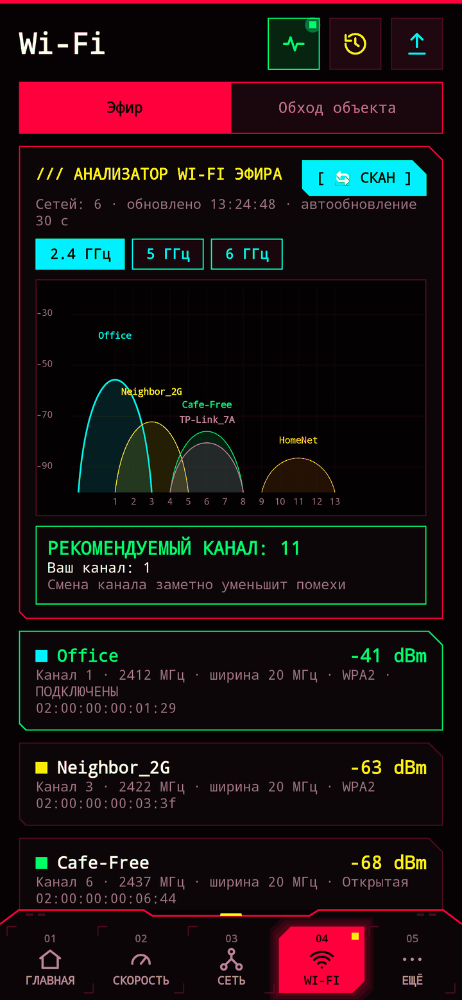

Как выбрать лучший канал Wi-Fi
В многоквартирных домах десятки сетей делят одни и те же несколько каналов и мешают друг другу. Перевести роутер на свободный канал — часто самый дешёвый способ ускорить Wi-Fi.

1. Посмотрите на эфир
Откройте Wi-Fi → Эфир в NetWatch. Каждая сеть рядом нарисована «горкой» над каналами, которые она занимает; чем выше горка, тем сильнее сигнал. Там, где горки перекрываются, сети мешают друг другу.
2. Посмотрите рекомендацию
- 2.4 ГГц: не перекрываются только каналы 1, 6 и 11, поэтому NetWatch выбирает самый свободный из них.
- 5 ГГц: каналов гораздо больше, а загрузка меньше; NetWatch советует один из 36–48 или 149–165 — они работают со всеми устройствами и не требуют проверки на радары (DFS).
- Если ваш текущий канал и так хорош, NetWatch так и скажет — ничего менять не нужно.
3. Смените канал на роутере
Откройте страницу настроек роутера (адрес есть на главной NetWatch), зайдите в настройки беспроводной сети и вместо «Авто» выберите рекомендованный канал. В плотной застройке ставьте ширину канала 20 МГц на 2.4 ГГц — широкие каналы пересекаются с большим числом соседей.
4. Проверьте результат
Сделайте замер Скорости до и после и посмотрите график сигнала на главной. NetWatch сохраняет все замеры в Историю, так что разницу легко сравнить.
Советы
- Если устройства поддерживают 5 ГГц — используйте его: быстрее и свободнее, но хуже проходит через стены.
- В части комнат слабый сигнал? Пройдитесь с Wi-Fi → Обход объекта и замерьте каждую точку — станет видно, где нужна вторая точка доступа.
- Android разрешает примерно 4 сканирования Wi-Fi за 2 минуты. Если график не обновляется, немного подождите.
Проверьте свою сеть
NetWatch бесплатный, без рекламы и ничего не собирает.
Обновлено: 2026-10-17